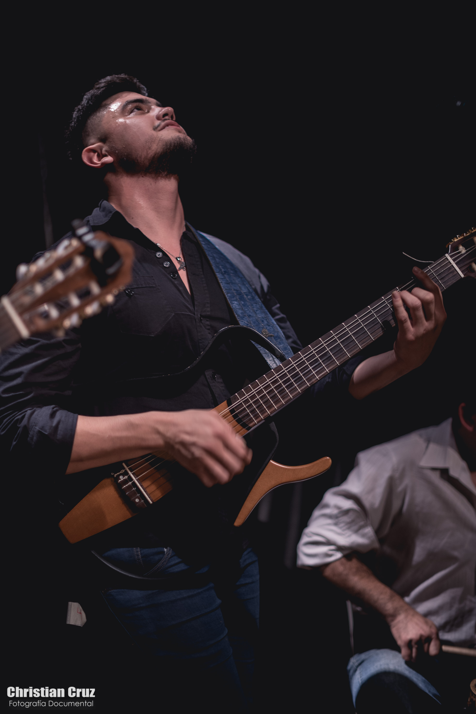
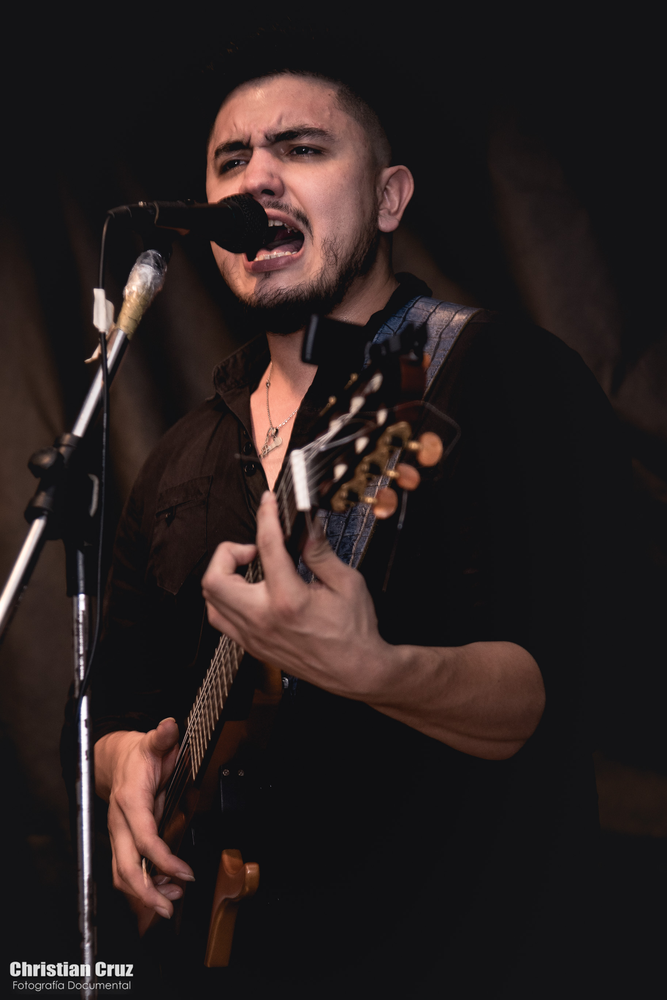
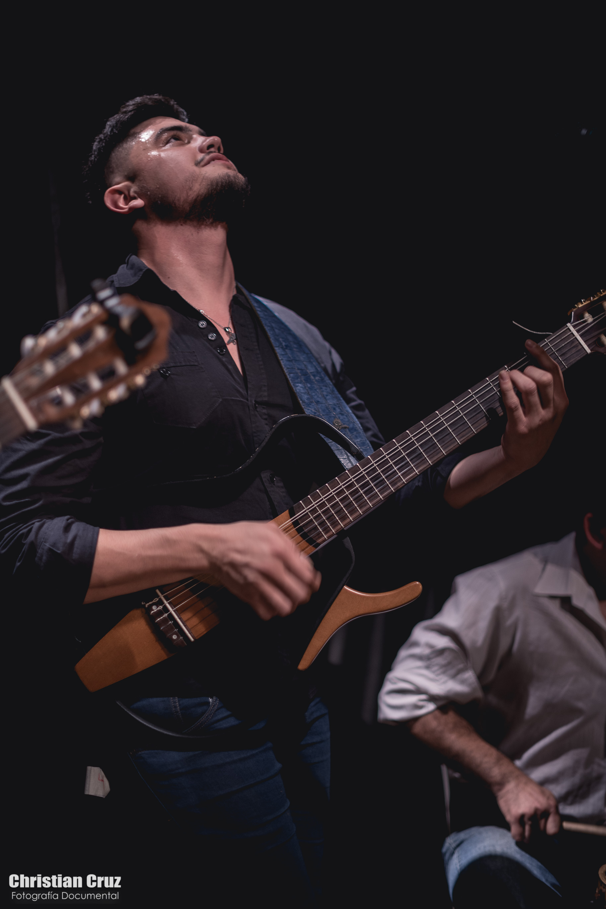
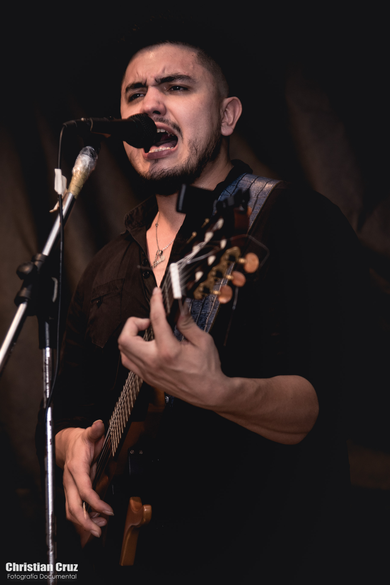

Gacetilla de Prensa
SOBRE FEDE LOBO:
Fede Lobo es nacido en Las Termas de Río Hondo, no solo es portador de un apellido, que en Santiago del Estero tiene peso en historia, sino que comenzó a transitar la música a los 4 años, cuando subió por primera vez a tocar la percusión con su padre que también es cantante y músico.Pasados los años fue telonero de importantes artistas como Los Manseros Santiagueños, Abel Pintos, Los Nocheros y por último de Soledad en Julio del año pasado. Durante el 2017, fue figura destacada en la "Gran Revista Norteña" encabezada por Carmen Barbieri y Luisa Albinoni en Termas de Río Hondo. A finales de ese mismo año se radica en Buenos Aires donde desembarca para dar una nueva etapa a su carrera, lo que lo lleva a trabajar nuevamente con la Gran Luisa Albinoni en su unipersonal Influencer 3E como figura invitada en el Teatro Regina.
LANZAMIENTO DISCOGRAFICO TIERRA URBANA:
Su primer álbum (con la mayoría de canciones propias) cuenta con un sonido original y un perfil fresco, donde se mira al folklore desde una perspectiva diferente, rescatando la raíz y trayéndolo para estos tiempos urbanos y de cambios. Allí, Fede deja plasmado su virtuosismo, pero además cuenta con zambas como Déjame Estar junto a Milena Salamanca, Tierras doradas junto a Carlos Cabral y Bailarás junto a Franco Ramírez. Cabe destacarse que predomina la chacarera junto a otros ritmos manteniendo su esencia Santiagueña que lo caracteriza. Participó en el programa N° 1 de la televisión argentina "CANTANDO 2020" acompañando a Luisa Albinoni en la gala de Homenajes. Fede también se desempeña como conductor de TV en uno de los programas más importantes de Folklore en la actualidad "Almas de mí pago" que actualmente va en su séptima temporada. Este verano 2022 hizo una gira por toda la costa atlántica presentando sus canciones más recientes en plataformas digitales como Gato de las farras (homenaje a su tío abuelo Cacho Lobo) Almas de mi pago (chacarera de su autoría donde participa Mario Álvarez Quiroga) y Chacarera sacherita (junto a las Sachaguitarras Atamishqueñas) Entre otras… Según la prensa especializada, Fede es el artista con mayor proyección de los últimos años en la música Santiagueña.
- DECLARADO POR EL HONORABLE CONSEJO DELIBERANTE COMO REPRESENTANTE ARTÍSTICO DE LAS TERMAS DE RÍO HONDO -
Galeria
Produccion de fotos realizadas en Termas de Rio Hondo, escenarios en Buenos Aires y para el disco Tierra Urbana.


 




Contacto
Podes escribirme al siguiente mail
fedelobofolk@gmail.com